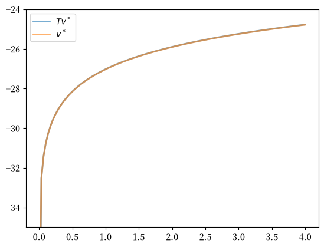
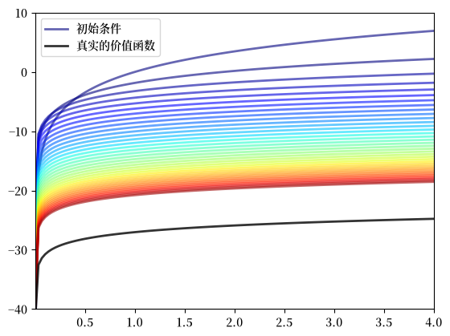
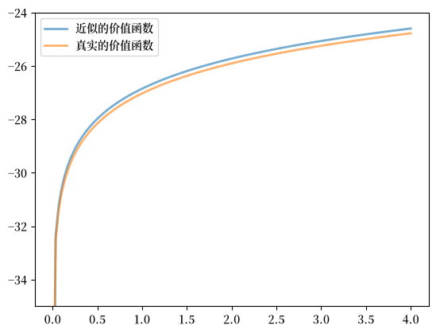
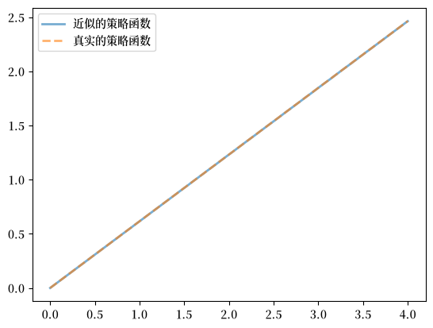
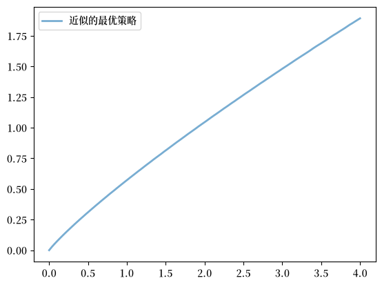

66. 最优储蓄 III：随机回报#
66.1. 概述#
在本讲中，我们继续研究最优储蓄问题，内容建立在 吃蛋糕问题 I：最优储蓄导论 和 最优储蓄 II：数值方法吃蛋糕问题 的基础之上。
与前面讲义的主要区别在于，财富现在按随机方式演化。
我们可以把财富想象成一种收成，如果我们储存一些种子，它就能再生长出来。
具体地说，如果我们储蓄并投资今天收成 \(x_t\) 的一部分，它会依照一个随机生产过程演变为下一期的收成 \(x_{t+1}\)。
本讲的拓展引入了几个新元素：
通过生产函数实现的非线性储蓄回报，以及
由于生产冲击导致的随机回报。
尽管增加了这些设定，该模型依然相对容易处理。
作为第一步，我们将使用动态规划和价值函数迭代（VFI）来求解该模型。
备注
在后续讲义中，我们将探索针对这类问题的更高效方法。
与此同时，VFI是这类方法的基础，并且具有全局收敛性。
因此，我们也希望确保自己能够熟练运用这一方法。
关于这一储蓄问题的更多信息可以参考
[Ljungqvist and Sargent, 2018]，第3.1节
EDTC，第1章
[Sundaram, 1996]，第12章
让我们从一些基本导入开始：
import matplotlib.pyplot as plt
import matplotlib as mpl
FONTPATH = "fonts/SourceHanSerifSC-SemiBold.otf"
mpl.font_manager.fontManager.addfont(FONTPATH)
plt.rcParams['font.family'] = ['Source Han Serif SC']
import numpy as np
from scipy.interpolate import interp1d
from scipy.optimize import minimize_scalar
from typing import NamedTuple, Callable
66.2. 模型#
这里我们描述这个新模型和优化问题。
66.2.1. 设定#
考虑一个主体在时间 \(t\) 拥有数量为 \(x_t \in \mathbb R_+ := [0, \infty)\) 的消费品。
这些产出既可以被消费，也可以被储蓄并用于生产。
生产是随机的，因为它还取决于在当期结束时实现的一个冲击 \(\xi_{t+1}\)。
下一期的产出为
其中 \(f \colon \mathbb R_+ \to \mathbb R_+\) 是生产函数，且
是当期储蓄。
所有变量都必须为非负数。
在接下来的设定中，
序列 \(\{\xi_t\}\) 被假定为独立同分布(IID)。
每个 \(\xi_t\) 的共同分布记为 \(\phi\)。
假设生产函数 \(f\) 是递增且连续的。
66.2.2. 优化问题#
给定初始状态 \(x_0\)，个体希望最大化
约束条件为
其中
\(u\) 是有界、连续且严格递增的效用函数，且
\(\beta \in (0, 1)\) 是贴现因子。
总的来说，个体的目标是选择一个消费路径 \(c_0, c_1, c_2, \ldots\)，使其：
非负，
可行，
最优，即相对于所有其他可行的消费序列，所选路径使目标函数(66.2)达到最大化，以及
适应性，即当前行动 \(c_t\) 只依赖于当前和历史的结果，而不依赖于未来的结果，如 \(\xi_{t+1}\)。
在当前语境下
\(x_t\) 被称为状态变量——它刻画了每一期开始时的“世界状态”。
\(c_t\) 被称为控制变量——它是主体在观察到状态之后于每一期所选择的值。
66.2.3. 最优策略#
让我们来看看策略函数，每个策略函数都是一个从 当前状态 \(x_t\) 到当前行动 \(c_t\) 的映射 \(\sigma\)。
备注
这类策略被称为马尔可夫策略（或平稳马尔可夫策略）。
对于这个动态规划问题，最优策略总是一个马尔可夫策略（参见， 例如，DP1）。
本质上，当前状态 \(x_t\) 为历史提供了一个充分统计量， 足以用来做出今天的最优决策。
在接下来的内容中，如果 \(\sigma\) 满足以下条件，我们就称其为可行消费策略
换句话说，可行策略是满足资源约束的策略函数。
所有可行消费策略的集合记为 \(\Sigma\)。
每个 \(\sigma \in \Sigma\) 都通过
为产出 \(\{x_t\}\) 确定了一个马尔可夫动态。
这就描述了在选定并遵循策略 \(\sigma\) 时，产出的时间路径。
将这一过程代入目标函数，可以得到
这就是在给定初始收入 \(x_0\) 时，永远遵循策略 \(\sigma\) 的总期望现值。
目标是选择一个策略，使得该数值尽可能大。
下一节将更正式地介绍这些思想。
66.2.4. 最优性#
与给定策略 \(\sigma\) 相关的终身价值 \(v_{\sigma}\) 是由下式定义的映射
其中 \(\{x_t\}\) 由 (66.5) 给出，且 \(x_0 = x\)。
换句话说，这是从初始条件 \(x\) 开始，永远遵循策略 \(\sigma\) 的终身价值。
价值函数则定义为
价值函数给出了在状态 \(x\) 下，考虑所有可行策略后所能获得的最大价值。
如果对所有 \(x \in \mathbb R_+\) 都有 \(v_\sigma(x) = v^*(x)\)，则称策略 \(\sigma \in \Sigma\) 为最优策略。
66.2.5. 贝尔曼方程#
下面这个方程被称为与这个动态规划问题相关的贝尔曼方程。
在某种意义上，这是一个关于 \(v\) 的函数方程，即给定的 \(v\) 可能满足它，也可能不满足它。
其中项 \(\int v(f(x - c) z) \phi(dz)\) 可以理解为在以下条件下的下一期期望价值：
使用 \(v\) 来衡量价值
当前状态为 \(x\)
消费选择为 \(c\)
正如 DP1 以及一系列其他文献所示， 价值函数 \(v^*\) 满足贝尔曼方程。
换句话说，当 \(v=v^*\) 时，(66.9) 成立。
直观上来说，从给定状态出发的最大价值可以通过在以下两者之间进行最优权衡获得：
给定行动带来的当期回报，与
由该行动导致的未来状态所带来的贴现期望价值
贝尔曼方程之所以重要，是因为它
为我们提供了更多关于价值函数的信息，并且
提示了一种计算价值函数的方法，我们将在下面讨论。
66.2.6. 逐期最优策略#
价值函数可以用来计算最优策略。
给定 \(\mathbb R_+\) 上的一个连续函数 \(v\)，如果
对每个 \(x \in \mathbb R_+\) 都成立，我们就说 \(\sigma \in \Sigma\) 是 \(v\)-逐期最优的。
换句话说，当 \(v\) 被视为价值函数时，如果 \(\sigma \in \Sigma\) 能够最优地 权衡当前和未来回报，那么它就是 \(v\)-逐期最优的。
在我们的设定中，有如下关键结果
定理 66.1
一个可行消费策略是最优的，当且仅当它是 \(v^*\)-逐期最优的。
参见，例如，EDTC 的定理10.1.11。
因此，一旦我们得到了对 \(v^*\) 的一个良好近似，就可以通过计算 相应的逐期最优策略来获得（近似）最优策略。
这样做的优势在于：我们现在解决的是一个维度低得多的 优化问题。
66.2.7. 贝尔曼算子#
那么，我们该如何计算价值函数呢？
一种方法是使用所谓的贝尔曼算子。
（算子这个术语通常专门用来指代将函数映射到函数的映射！）
贝尔曼算子记为 \(T\)，其定义为
换句话说，\(T\) 将函数 \(v\) 映射为由(66.11)定义的新函数 \(Tv\)。
根据构造，贝尔曼方程(66.9)的解集 恰好等于 \(T\) 的不动点集。
例如，如果 \(Tv = v\)，那么对于任意 \(x \geq 0\)，
这正好说明 \(v\) 是贝尔曼方程的一个解。
由此可知 \(v^*\) 是 \(T\) 的一个不动点。
66.2.8. 理论结果回顾#
可以证明，在上确界距离下，\(T\) 是 \(\mathbb R_+\) 上连续有界函数集合上的一个压缩映射
参见 EDTC的引理10.1.18。
因此，在该集合中它恰好有一个不动点，而我们知道该不动点等于价值函数。
由此可知
价值函数 \(v^*\) 是有界且连续的。
从任意有界且连续的 \(v\) 开始，通过反复应用 \(T\) 生成的序列 \(v, Tv, T^2v, \ldots\) 一致收敛到 \(v^*\)。
这种迭代方法被称为价值函数迭代。
我们还知道，一个可行策略是最优的，当且仅当它是 \(v^*\)-逐期最优的。
不难证明 \(v^*\)-逐期最优策略是存在的。
因此，至少存在一个最优策略。
我们现在的问题是如何计算它。
66.2.9. 无界效用#
上述结果假设 \(u\) 是有界的。
但在实践中，经济学家常常使用无界效用函数——我们也会如此。
在无界情形下，存在多种最优性理论。
尽管如此，它们的主要结论通常与上面针对 有界情形所陈述的结论一致（只要我们去掉“有界”一词）。
66.3. 计算#
现在让我们来看看如何计算价值函数和最优策略。
本讲中的实现将着重于清晰性和灵活性。
（在后续讲义中，我们将着重于效率和速度。）
我们将使用拟合价值函数迭代法，这一方法已经在 最优储蓄 II：数值方法吃蛋糕问题 中介绍过。
66.3.1. 标量最大化#
为了最大化贝尔曼方程(66.9)的右侧，我们将使用
SciPy中的minimize_scalar程序。
为了保持接口的整洁，我们将把 minimize_scalar 封装在一个外部函数中，如下所示：
def maximize(g, upper_bound):
"""
在区间 [0, upper_bound] 上最大化函数 g。
我们利用了在任何区间上 g 的最大值点也是
-g 的最小值点这一事实。
"""
objective = lambda x: -g(x)
bounds = (0, upper_bound)
result = minimize_scalar(objective, bounds=bounds, method='bounded')
maximizer, maximum = result.x, -result.fun
return maximizer, maximum
66.3.2. 模型#
我们暂且假设 \(\phi\) 是 \(\xi := \exp(\mu + \nu \zeta)\) 的分布，其中
\(\zeta\) 是标准正态分布随机变量，
\(\mu\) 是冲击的位置参数，
\(\nu\) 是冲击的尺度参数。
我们将模型的基本要素存储在一个 NamedTuple 中。
class Model(NamedTuple):
u: Callable # 效用函数
f: Callable # 生产函数
β: float # 贴现因子
μ: float # 冲击位置参数
ν: float # 冲击尺度参数
x_grid: np.ndarray # 状态网格
shocks: np.ndarray # 冲击抽样
def create_model(
u: Callable,
f: Callable,
β: float = 0.96,
μ: float = 0.0,
ν: float = 0.1,
grid_max: float = 4.0,
grid_size: int = 120,
shock_size: int = 250,
seed: int = 1234
) -> Model:
"""
创建一个最优储蓄模型的实例。
"""
# 设置网格
x_grid = np.linspace(1e-4, grid_max, grid_size)
# 存储冲击（设定随机种子，使结果可重现）
np.random.seed(seed)
shocks = np.exp(μ + ν * np.random.randn(shock_size))
return Model(u, f, β, μ, ν, x_grid, shocks)
我们设定贝尔曼方程的右侧为
def B(
x: float, # 状态
c: float, # 行动
v_array: np.ndarray, # 表示价值函数猜测值的数组
model: Model # 包含参数的Model实例
):
u, f, β, μ, ν, x_grid, shocks = model
v = interp1d(x_grid, v_array)
return u(c) + β * np.mean(v(f(x - c) * shocks))
在倒数第二行中，我们使用线性插值。
在最后一行中，(66.11)中的期望值 是通过蒙特卡洛法计算的，使用如下近似：
其中 \(\{\xi_i\}_{i=1}^n\) 是从 \(\phi\) 中独立同分布抽取的样本。
蒙特卡洛并不总是计算积分最有效的数值方法， 但在当前设定下，它确实具有一些理论优势。
（例如，它保持了贝尔曼算子的压缩映射性质——参见，例如，[Pál and Stachurski, 2013]。）
66.3.3. 贝尔曼算子#
下面的函数实现了贝尔曼算子。
def T(v: np.ndarray, model: Model) -> tuple[np.ndarray, np.ndarray]:
"""
贝尔曼算子。更新对价值函数的猜测。
* model 是 Model 的一个实例
* v 是表示价值函数猜测的数组
"""
x_grid = model.x_grid
v_new = np.empty_like(v)
for i in range(len(x_grid)):
x = x_grid[i]
_, v_max = maximize(lambda c: B(x, c, v, model), x)
v_new[i] = v_max
return v_new
下面是这个函数：
def get_greedy(
v: np.ndarray, # 价值函数的当前猜测
model: Model # 最优储蓄模型的实例
):
" 在 x_grid 上计算v-逐期最优策略。"
σ = np.empty_like(v)
for i, x in enumerate(model.x_grid):
# 在状态x下最大化贝尔曼方程的右侧
σ[i], _ = maximize(lambda c: B(x, c, v, model), x)
return σ
66.3.4. 一个示例#
现在假设
对于这一特定问题，可以得到一个精确的解析解（参见 [Ljungqvist and Sargent, 2018]，第3.1.2节），其形式为
以及最优消费策略
有这些封闭形式解的价值在于：它们使我们能够检验 我们的代码在这一具体情形下是否正确。
在Python中，上述函数可以表示为：
def v_star(x, α, β, μ):
"""
真实价值函数
"""
c1 = np.log(1 - α * β) / (1 - β)
c2 = (μ + α * np.log(α * β)) / (1 - α)
c3 = 1 / (1 - β)
c4 = 1 / (1 - α * β)
return c1 + c2 * (c3 - c4) + c4 * np.log(x)
def σ_star(x, α, β):
"""
真实最优策略
"""
return (1 - α * β) * x
接下来让我们用上述基本要素创建一个模型实例，并将其赋值给变量 model。
α = 0.4
def fcd(s):
return s**α
model = create_model(u=np.log, f=fcd)
现在让我们看看当我们将贝尔曼算子应用于这种情况下的 精确解 \(v^*\) 时会发生什么。
理论上，由于 \(v^*\) 是一个不动点，得到的函数应该仍然是 \(v^*\)。
在实践中，我们预计会有一些小的数值误差。
x_grid = model.x_grid
v_init = v_star(x_grid, α, model.β, model.μ) # 从解开始
v = T(v_init, model) # 应用一次T
fig, ax = plt.subplots()
ax.set_ylim(-35, -24)
ax.plot(x_grid, v, lw=2, alpha=0.6, label='$Tv^*$')
ax.plot(x_grid, v_init, lw=2, alpha=0.6, label='$v^*$')
ax.legend()
plt.show()
findfont: Failed to find font weight normal, now using 600.
findfont: Failed to find font weight normal, now using 600.

这两个函数本质上没有区别，所以我们开始得很顺利。
现在让我们看看从任意初始条件开始， 如何用贝尔曼算子进行迭代。
我们随意地将起始初始条件设定为 \(v(x) = 5 \ln (x)\)。
v = 5 * np.log(x_grid) # 一个初始条件
n = 35
fig, ax = plt.subplots()
ax.plot(x_grid, v, color=plt.cm.jet(0),
lw=2, alpha=0.6, label='初始条件')
for i in range(n):
v = T(v, model) # 应用贝尔曼算子
ax.plot(x_grid, v, color=plt.cm.jet(i / n), lw=2, alpha=0.6)
ax.plot(x_grid, v_star(x_grid, α, model.β, model.μ), 'k-', lw=2,
alpha=0.8, label='真实的价值函数')
ax.legend()
ax.set(ylim=(-40, 10), xlim=(np.min(x_grid), np.max(x_grid)))
plt.show()

图中显示了
由拟合价值函数迭代算法生成的前36个函数，颜色越热表示迭代次数越高
用黑色线条绘制的真实价值函数 \(v^*\)
迭代序列逐渐收敛至 \(v^*\)。
我们显然正在接近目标。
66.3.5. 迭代至收敛#
我们可以编写一个函数，使其迭代直到差异小于特定的容差水平。
def solve_model(
model: Model, # 最优储蓄模型的实例
tol: float = 1e-4, # 收敛容差
max_iter: int = 1000, # 最大迭代次数
verbose: bool = True, # 打印迭代信息
print_skip: int = 25 # 每隔多少次迭代打印一次
):
" 通过价值函数迭代求解。"
v = model.u(model.x_grid) # 初始条件
i = 0
error = tol + 1
while i < max_iter and error > tol:
v_new = T(v, model)
error = np.max(np.abs(v - v_new))
i += 1
if verbose and i % print_skip == 0:
print(f"第 {i} 次迭代的误差为 {error}。")
v = v_new
if error > tol:
print("未能收敛！")
elif verbose:
print(f"\n经过 {i} 次迭代后收敛。")
v_greedy = get_greedy(v_new, model)
return v_greedy, v_new
让我们使用这个函数在默认设置下计算一个近似解。
v_greedy, v_solution = solve_model(model)
第 25 次迭代的误差为 0.40975776844490497。
第 50 次迭代的误差为 0.1476753540823772。
第 75 次迭代的误差为 0.05322171277213883。
第 100 次迭代的误差为 0.019180930548653663。
第 125 次迭代的误差为 0.006912744396029069。
第 150 次迭代的误差为 0.0024913303848244084。
第 175 次迭代的误差为 0.0008978672913002583。
第 200 次迭代的误差为 0.00032358842396718046。
第 225 次迭代的误差为 0.00011662020561686859。
经过 229 次迭代后收敛。
现在我们通过将结果与真实值作图比较来检验其准确性：
fig, ax = plt.subplots()
ax.plot(x_grid, v_solution, lw=2, alpha=0.6,
label='近似的价值函数')
ax.plot(x_grid, v_star(x_grid, α, model.β, model.μ), lw=2,
alpha=0.6, label='真实的价值函数')
ax.legend()
ax.set_ylim(-35, -24)
plt.show()

图表显示我们的结果非常准确。
66.3.6. 策略函数#
上面计算出的策略 v_greedy 对应于一个近似最优策略。
下图将其与精确解进行比较，如上所述，精确解为 \(\sigma(x) = (1 - \alpha \beta) x\)
fig, ax = plt.subplots()
ax.plot(x_grid, v_greedy, lw=2,
alpha=0.6, label='近似的策略函数')
ax.plot(x_grid, σ_star(x_grid, α, model.β), '--',
lw=2, alpha=0.6, label='真实的策略函数')
ax.legend()
plt.show()

图表显示我们在这个例子中很好地近似了真实的策略。
66.4. 练习#
练习 66.1
在这类工作中，效用函数的一个常见选择是CRRA规格
保持其他默认设置（包括柯布-道格拉斯生产函数）， 用这个效用函数求解最优储蓄模型。
设定 \(\gamma = 1.5\)，计算并绘制最优策略的估计值。
解答 练习 66.1
首先，我们设置模型。
γ = 1.5 # 偏好参数
def u_crra(c):
return (c**(1 - γ) - 1) / (1 - γ)
model = create_model(u=u_crra, f=fcd)
现在让我们运行它，并计时。
%%time
v_greedy, v_solution = solve_model(model)
第 25 次迭代的误差为 0.5528151810316331。
第 50 次迭代的误差为 0.19923228425592399。
第 75 次迭代的误差为 0.07180266113797984。
第 100 次迭代的误差为 0.025877443335843964。
第 125 次迭代的误差为 0.009326145618956616。
第 150 次迭代的误差为 0.0033611122620129663。
第 175 次迭代的误差为 0.0012113338242656368。
第 200 次迭代的误差为 0.0004365607333056687。
第 225 次迭代的误差为 0.00015733505506432266。
经过 237 次迭代后收敛。
CPU times: user 20.4 s, sys: 46.9 ms, total: 20.4 s
Wall time: 20.4 s
让我们绘制策略函数，看看它的样子：
fig, ax = plt.subplots()
ax.plot(x_grid, v_greedy, lw=2,
alpha=0.6, label='近似的最优策略')
ax.legend()
plt.show()
